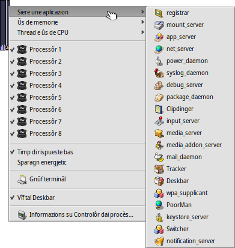
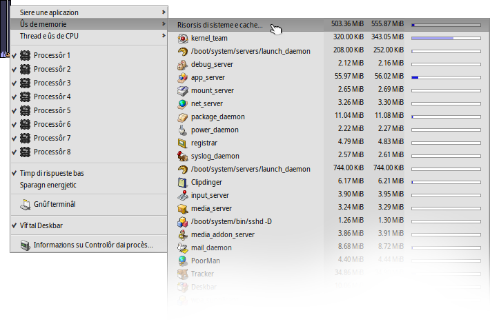

Controlôr dai procès
Controlôr dai procès
| Deskbar: | ||
| Posizion: | /boot/system/apps/ProcessController | |
| Impostazions: | nissune |
 Il compit principâl de applet “Controlôr dai procès” al è chel di mostrâ la ativitât dal/des to(s) CPU e la cuantitât di memorie doprade. Ti permet di monitorâ singui team, cambiâ la lôr prioritât, e copâju se il program si bloche. Intai ambients multi-processôrs ti permet di disabilitâ singui processôrs/core. Cuant che Tracker o Deskbar a colassin tu puedis tornâ a inviâju dal menù di Controlôr dai procès.
Il compit principâl de applet “Controlôr dai procès” al è chel di mostrâ la ativitât dal/des to(s) CPU e la cuantitât di memorie doprade. Ti permet di monitorâ singui team, cambiâ la lôr prioritât, e copâju se il program si bloche. Intai ambients multi-processôrs ti permet di disabilitâ singui processôrs/core. Cuant che Tracker o Deskbar a colassin tu puedis tornâ a inviâju dal menù di Controlôr dai procès.
I indicadôrs a çampe a mostrin la utilizazion di ogni CPU, Invezit la sbare a diestre e mostre la memore consumade. Visiti che il numar di indicadôrsa al dipent dal numar di processôrs/core dal to computer.
Se nol è ancjemò in esecuzion, inviant “Controlôr dai procès” al domandarà se si à di vierzilu in modalitât barcon o “vivi” tal Deskbar. In modalitât barcon tu puedis ridimensionâ la visualizazion des sbaris ridimensionant il barcon e dopo doprâ la mantie dal Replicant par strissinâlu sul scritori.
Pardut là che tu lu instalis, al ven doprât cuntun menù contestuâl, vie clic diestri.
Par tornâ a gjavâ la applet dal Deskbar, deselezione tal so menù contestuâl .
Sierâ une aplicazion
Par sierâ di une aplicazion al baste sielzi il so non dal menù . Chest al è un mût net par sierâ aplicazions, tant che fâ clic sul so boton par sierâ. Dut câs, sta atent a no sierâ procès di sisteme o demonis. La afidabilitât dal sisteme e podarès jessi comprometude.
Ûs de memorie
Monitorâ la memorie al pues jessi pitost imprecîs.
Chest menù ti permet di tignî di voli la utilizazion de memorie par ogni team tal to sisteme. In bande al non dal team si à dôs colonis: la prime cu la cuantitât riservade pe memorie che si pues scrivi, la seconde e mostre dute la memorie includût il spazi in dome-leture (librariis condividudis par esempli).
La prime rie Risorsis di sisteme e cache... e mostre la cuantitât di memorie totâl doprade dal sisteme e di dutis lis aplicazions. La lungjece de sbare blu si base sul totâl de memorie fisiche tal computer. Lis riis sucessivis a mostri la memorie doprade par ogni procès. Fâs câs che la lungjece de sbare blu si base dome su la part atualmentri doprade de memorie.
| Memorie doprade dome de aplicazion indicade (cun acès in scriture) | ||
| Memorie includint il spazi in dome-leture (e pues jessi condividude cun altris aplicazions) |
Thread e ûs de CPU
Chest menù al permet di cambiâ lis prioritâts dai thread, copâ i team o fâur il debug.
| Codiç dal kernel | ||
| Codiç utent | ||
| Thread inatîf |
Al prin nivel si viôt i nons dai team. Fasint clic su di un, tu puedis copâ il team intîr. La part blu scure de sbare al è il timp passât tal codiç dal kernel, la part blu clare in codiç utent, la part verde intal/intai thread inatîf(s). Une sbare jemplade dal dut di blu e significhe che il team al sta doprant dute la potence di elaborazion.
Il secont nivel al mostre i thread particolârs di un team. Fasint clic suntun, tu puedis fâ il debug o copâlu. Une sbare jemplade dal dut di blu e significhe che il thread si è tacât e al ocupe dal dut un processôr/core.
L'ultin nivel dal menù ti permet di cambiâ une prioritât dal thread. Sta atent cun chel! Come regule gjenerâl la prioritât di un thread e à di sei contrarie rispiet al so ûs de CPU. Cioè, plui al cîr di rivendicâ timp ae CPU, plui bas al à di jessi la sô prioritât. In gjenerâl, no sta fâ pastiei cu lis prioritâts de aplicazion; contate il so autôr, chel al è il so mistîr.